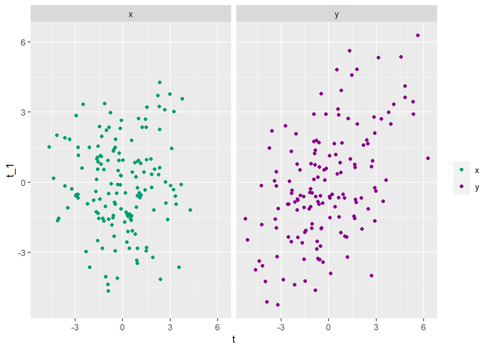
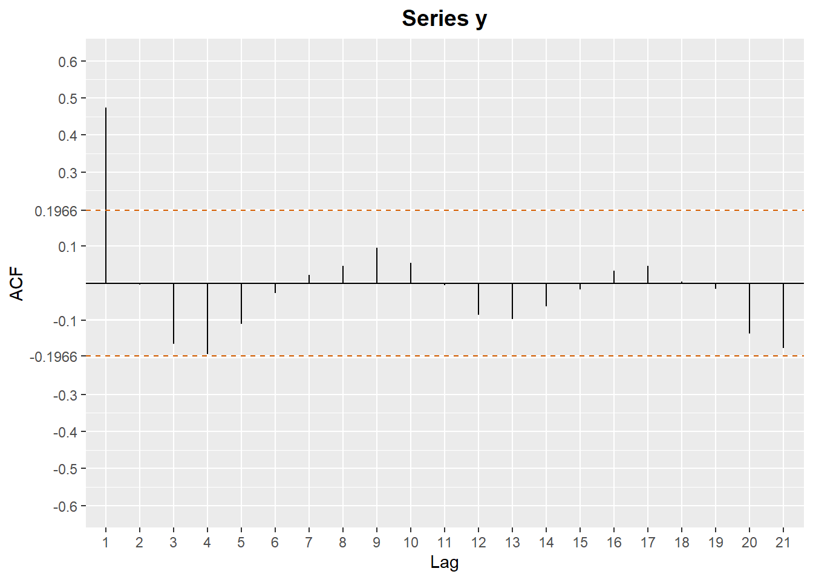
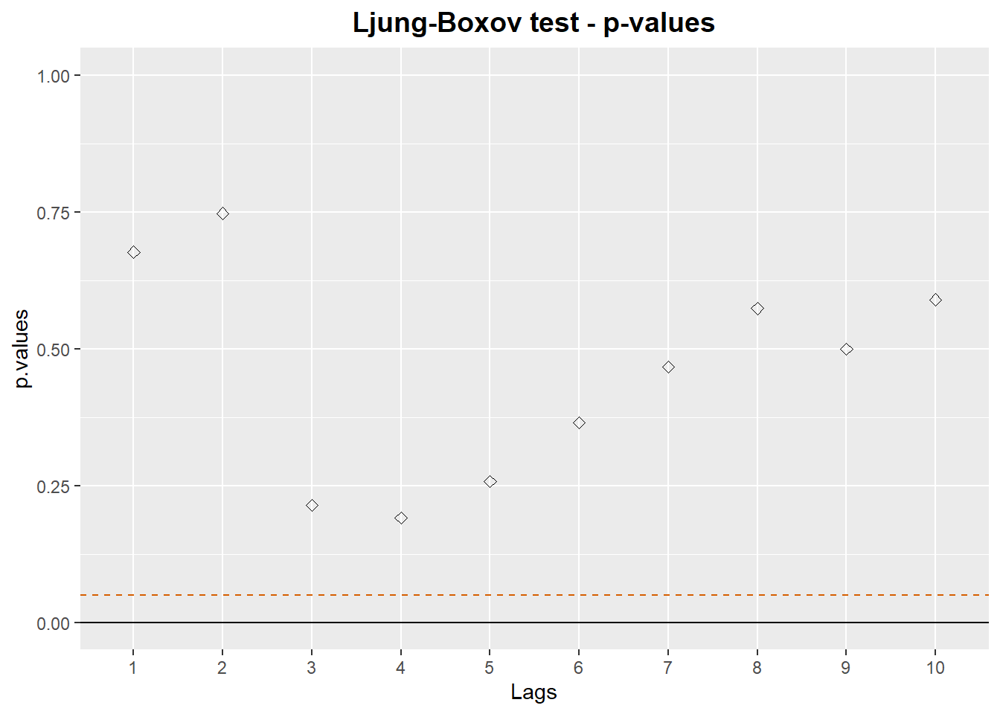
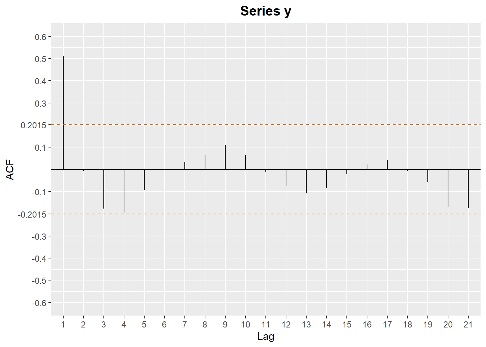
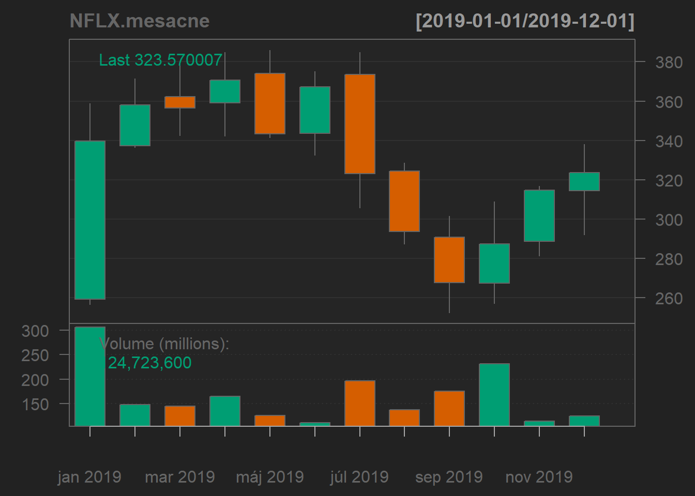
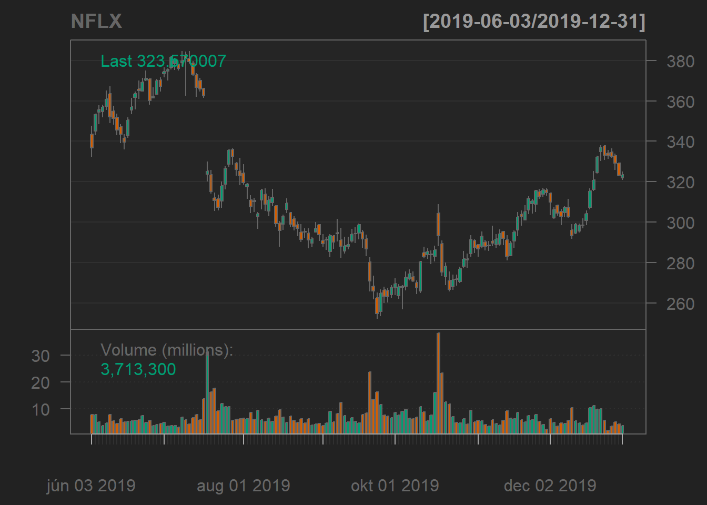
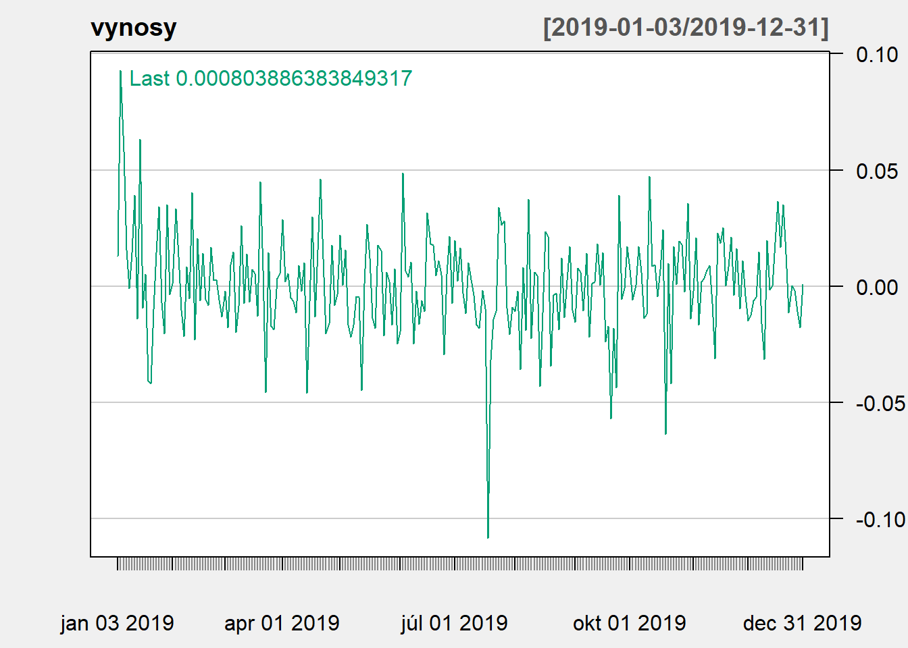
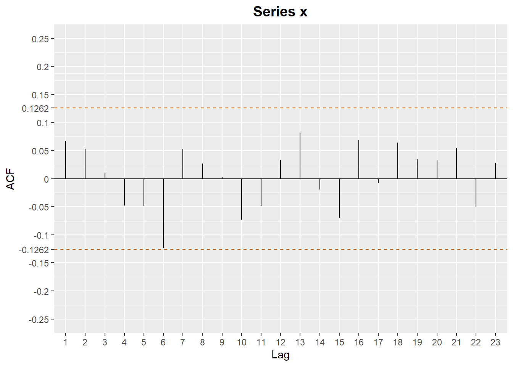
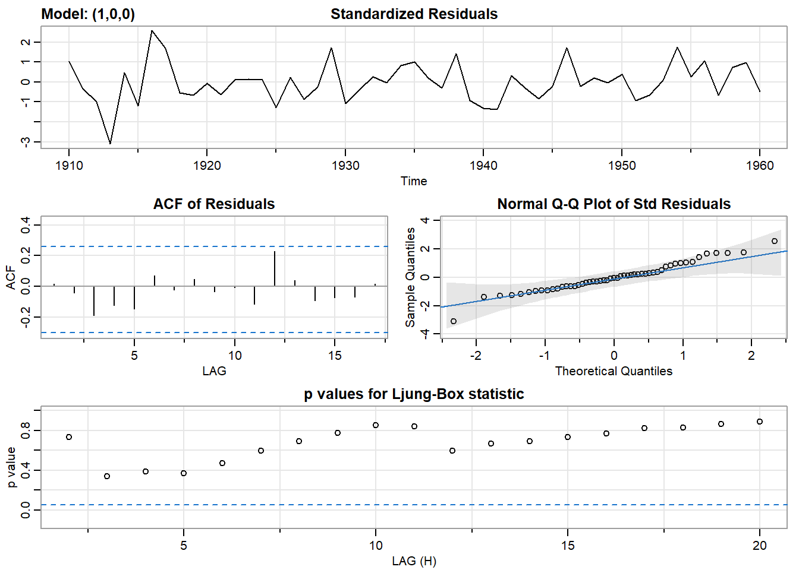
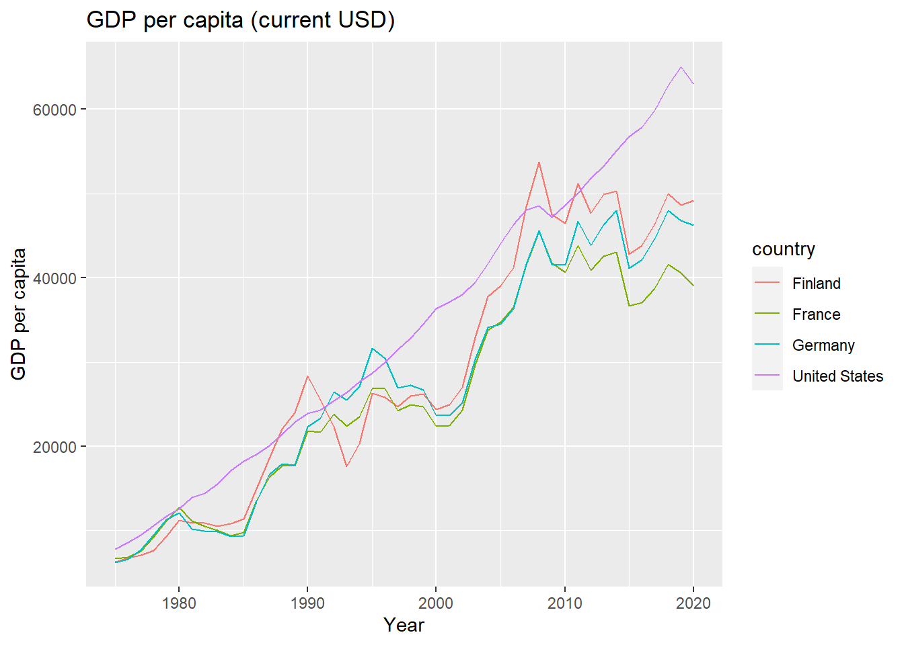

Cvičenie 1 - Testovanie autokorelácií, AR(1)
1 knižnice
Spustením nasledovného príkazu sa nainštalujú potrebné knižnice, ak nainštalované nie sú, a zároveň sa aj načítajú.
# názvy balíkov, ktoré budú potrebné pre cvičenie 1
packages <- c("ggplot2","quantmod","astsa","WDI")
# inštalácia balíkov, ak nie sú nainštalované
installed_packages <- packages %in% rownames(installed.packages())
if (any(installed_packages == FALSE)) {
install.packages(packages[!installed_packages],dependencies=TRUE)
}
# načítanie balíkov
invisible(lapply(packages, library, character.only = TRUE))2 Opakovanie prednášky
2.1 Základné pojmy
- Čo je biely šum? (stredná hodnota, disperzia, autokovariancia)
- Silná a slabá stacionarita?
- Čo je autokorelačná funkcia?
- Čo znamená ergodický proces?
2.2 Generovanie nezávislých dát
Vygenerujeme si dve sady dát - biely šum posunutý o konštantu, takže bude mať nulové autokorelácie a dáta, ktoré vzniknú ako suma dvoch po sebe idúcich realizácií bieleho šumu. Napríklad takto:
# počet pozorovaní
N <- 150
# repredukovateľnosť výsledkov
set.seed(101)
# nezávislé z N(5,1)
x <- rnorm(N, mean = 0, sd = 2)
# závislé dáta y_t = x_t + 0.7x_t-1
y <- c(x[1],x[2:N] + 0.7*x[1:(N-1)])Zobrazíme si priebeh vygenerovaných dát:
 Zobrazíme si aj grafy \(x_{t}\) vs
\(x_{t-1}\), respektíve \(y_{t}\) vs. \(y_{t-1}\)
Zobrazíme si aj grafy \(x_{t}\) vs
\(x_{t-1}\), respektíve \(y_{t}\) vs. \(y_{t-1}\)

2.3 Testovanie nulovosti autokorelácií - každá samostatne
Časový rad vieme veľmi dobre reprezentovať pomocou autokorelačnej funckie.
V jazyku R máme aspoň 2 možnosti ako ju vypočítať. Súčasťou klasickej
syntexe R-ka je príkaz acf, alebo v balíku
astsa sa nachádzajú funkcie acf1 a
acf2, druhú menovanú zatiaľ nebudeme používať.
acf(x = časový rad,
lag.max = maximálny počet lagov ktorý nás zaujíma,
type = jedno z c("correlation", "covariance", "partial"),
plot = TRUE/FALSE podľa toho či chceme vykresliť aj graf,
a ďaľšie argumenty)
acf1(series = časový rad,
max.lag = maximálny počet lagov ktorý nás zaujíma,
plot = TRUE/FALSE podľa toho či chceme vykresliť aj graf,
pacf = TRUE/FALSE podľa toho či chceme autokorelácie alebo parciálne autokorelácie,
a ďaľšie argumenty)Zobrazíme autokoreláčnú funkciu: (napr. príklaz acf)
acf(x)
acf(x, plot = FALSE)$acf## , , 1
##
## [,1]
## [1,] 1.000000000
## [2,] 0.033724204
## [3,] 0.051500596
## [4,] -0.158504950
## [5,] -0.102108974
## [6,] -0.052251292
## [7,] 0.007922700
## [8,] 0.024825205
## [9,] 0.009619323
## [10,] 0.102218051
## [11,] 0.018363894
## [12,] 0.006773375
## [13,] -0.060680455
## [14,] -0.051498808
## [15,] -0.076482522
## [16,] 0.028169867
## [17,] -0.028336039
## [18,] 0.079951672
## [19,] -0.044625161
## [20,] 0.001326239
## [21,] -0.084402308
## [22,] -0.189443515Otázky:
- Akú hypotézu vieme takýmto prístupom testovať pre každú autokoreláciu?
- Aké vyzerá disperzia odhadu autokorelačnej funkcie, ak pracujeme s bielym šumom? Čo predpokladáme?
- Kedy hypotézu \(H_{0}\) zamietame? Ako vyzerá interval spoľahlivosti?
- Čo dostaváme v našom prípade?
Zobrazíme autokoreláčnú funkciu aj pre druhý časový rad: 
Prvá autokorelácia vyšla výrazne väčšia ako je hodnota intervalu spoľahlivosti. Môžeme z toho usudzovať, že daný proces nie je bielym šumom. Keďže zvyšné autokorelácie vychádzajú menej, poprípade na hrane, ako je hodnota intervalu spoľahlivosti, má zmysel testovať aj hypotézu, že \(\rho_1 \neq 0\) ale \(\rho_2=\rho_3=\rho_4=...=0\). Za tohto predpokladu, že všetky korelácie sú nulové od lagu \(p\) a vyššie, vieme aproximovať disperziu zvyšných autkorelacií ako: \[D(\hat{\rho_{i}}) \approx \frac{1}{N}(1+2\sum_{k=1}^{p}\rho_{k}^{2})\] V našom prípade je \(p=1\). Zobrazíme si opäť autokorelačnú funkciu, tento krát ale s inými intervalmi spoľahlivosti.

2.4 Testovanie nulovostí autokorelácií - Ljung-Boxov test
Ak nám výjdu hodnoty na hranici zamietania, je dobré sa pozrieť na autokorelácie aj skupinovo a nie len jednotne. Vždy pracujeme iba s odhadmi skutočných autokorelácií, preto je užitočné testovať nulovosť vybraného počtu prvých autokorelácií. Napríklad chceme testovať nulovosť prvých 4, teda \(\rho_1=\rho_2=\rho_3=\rho_4=0\).
Na to nám poslúži Ljung-Boxov test, v Rku príkaz
Box.test.
Box.test(x = Testovaný časový rad,
lag = počet koľko prvých autkorelácií chceme testovať,
type = jedno z c("Box-Pierce", "Ljung-Box") pričom budeme používať druhý menovaný,
fitdf = počet stupňov voľnosti ktorý chceme odobrať z testovej štatitiky)fitdf bude pre nás mať zmysel neskôr. Slúži nato, že ak
testujeme namiesto pôvodného časového radu rezíuá z modelu, tak sa nám
stupne voľnosti pre chi-kvadrát štatistiku zmenia.
Otestujeme nulovosť prvých štyroch autokorelácií časového radu
x:
Box.test(x, lag = 4, type = "Ljung-Box")##
## Box-Ljung test
##
## data: x
## X-squared = 6.1076, df = 4, p-value = 0.1913Otázky:
- Ako sa vypočíta testovacia štatistika?
- Aké je pravdepodobnostné rozdelenie štatistiky za platnosti nulovej hypotézy \(H_{0}\)?
- Pre aké hodnoty testovej štatistiky zamietame hypotézu \(H_{0}\)?
- Ako sa určí p-hodnota?
- Čo dostávame v našom prípade?
V cykle vypočítajte p-hodnoty zodpovedajúce testovaniu hypotézy, že prvých k autokorelácií je súcasne nulových. Výsledok znázornite graficky, zobrazte získané p hodnoty a hranicu 0.05.
Oplatí sa nastaviť y-ovú os na interval (0, 1), aby bol skript univerzálny pre všetky dáta, aby sa vždy (aj pri vysokých p hodnotách) dala vidieť vyznačená hodnota 0.05, s ktorou p hodnoty porovnávame.
k <- 10
p.values <- c()
for(i in 1:k)
{
p.values <- c(p.values,
Box.test(x, lag = i, type ="Ljung-Box")$p.value)
}plot( x = 1:k, # x-ová os
y = p.values, # y-ová os
type = "p", # body namiesto spojenej čiary
ylim = c(0,1)) # rozmädzie y-onovej osi
# kreslenie čiar do existujucého grafu
abline( h = 0.1, # horizotálna čiara na hodnote h
lty = "dashed", # prerušovaná čiara ako typ
col = "red") # farba
# druhý spôsob kreslenia čiar do existujucého grafu
abline( a = 0.05, # sklon priamky
b = 0, # intercept
lty = "dashed", # prerušovaná čiara
col = "blue") # farba 
3 Analýza výnosov akcií
Pomocou knižnice quantmod načítame priamo do R-ka ceny
akcií a zistíme, či sú korelované alebo nie.
3.1 Načítanie dát o cenách akcií pomocou knižnice quantmod
Načítajte (ak treba, tak nainštalujte) knižnicu
quantmod
library(quantmod)Na získanie cien akcií sa použije funkcia
getSymbols,
getSymbols(Symbols = skratka pre danú akciu - dá sa nájsť na finance.yahoo,
from = dátum od kedy chceme dáta,
to = dátum do kedy chceme dáta,
auto.assign = TRUE/FALSE podľa toho či chceme vytvoriť dataset s daným názvom rovno)napríklad:
getSymbols("NFLX", from = "2019-01-01", to = "2020-01-01", auto.assign = TRUE)## [1] "NFLX"Pozrime sa, ako vyzerajú naše dáta, ktoré sú uložené v premennej
NFLX, zobrazíme ich začiatok:
head(NFLX)## NFLX.Open NFLX.High NFLX.Low NFLX.Close NFLX.Volume NFLX.Adjusted
## 2019-01-02 259.28 269.75 256.58 267.66 11679500 267.66
## 2019-01-03 270.20 275.79 264.43 271.20 14969600 271.20
## 2019-01-04 281.88 297.80 278.54 297.57 19330100 297.57
## 2019-01-07 302.10 316.80 301.65 315.34 18620100 315.34
## 2019-01-08 319.98 320.59 308.01 320.27 15359200 320.27
## 2019-01-09 317.71 323.35 313.50 319.96 13343200 319.963.2 Grafy pomocou quantmod
Napr.:
chartSeries(NFLX, up.col = "#009E73", dn.col = "#D55E00")
Skúste aj:
chartSeries(NFLX, subset="2019-06::2019-12", up.col = "#009E73", dn.col = "#D55E00") # od juna do septembra
NFLX.mesacne <- to.monthly(NFLX) # mesacne data
NFLX.mesacne # vypiseme## NFLX.Open NFLX.High NFLX.Low NFLX.Close NFLX.Volume NFLX.Adjusted
## jan 2019 259.28 358.85 256.58 339.50 306616400 339.50
## feb 2019 337.18 371.49 336.50 358.10 148192100 358.10
## mar 2019 362.26 379.00 342.47 356.56 144843100 356.56
## apr 2019 359.00 384.80 342.27 370.54 165079400 370.54
## máj 2019 374.00 385.99 341.39 343.28 125298300 343.28
## jún 2019 343.56 375.00 332.65 367.32 111052000 367.32
## júl 2019 373.50 384.76 305.81 322.99 196652500 322.99
## aug 2019 324.25 328.58 287.20 293.75 137076700 293.75
## sep 2019 290.82 301.55 252.28 267.62 175411300 267.62
## okt 2019 267.35 308.75 257.01 287.41 231556400 287.41
## nov 2019 288.70 316.82 281.14 314.66 113645900 314.66
## dec 2019 314.39 338.00 292.02 323.57 124723600 323.57chartSeries(NFLX.mesacne, up.col = "#009E73", dn.col = "#D55E00") # graf
3.3 Výnosy akcií
Z týchto dát NFLX budeme potrebovať posledný stĺpec
(NFLX.Adjusted), z ktorého vypočítame výnosy. Budeme
pracovať so spojitými výnosmi, teda denné výnosy sa budú počítať ako
logaritmus podielu cien v dvoch po sebe idúcich dňoch. Ekvivalentne:
ceny <- NFLX$NFLX.Adjusted
vynosy <- diff(log(ceny))
# alebo vynosy <- diff(ceny, log = TRUE)
vynosy <- vynosy[-1] # pr=va hodnota bude NAPriebeh výnosov:
chartSeries(vynosy, theme=chartTheme('white',up.col="#009E73"))
Zobrazíme si autokorelačnú funkciu denných dát Autokorelačná funkcia: 
3.4 Testovanie autokorelácií
Zistite, či výnosy firmy Netflix sú nekorelované. Použite výberovú autokorelačnú funkciu a Ljung-Boxov test.
(Výsledok)

4 AR(1) procesy
V knižnici datasets je viacero zaujímavých časových
radov, my sa teraz pozrieme na prietok Nílu:
x <- Nile
x## Time Series:
## Start = 1871
## End = 1970
## Frequency = 1
## [1] 1120 1160 963 1210 1160 1160 813 1230 1370 1140 995 935 1110 994 1020
## [16] 960 1180 799 958 1140 1100 1210 1150 1250 1260 1220 1030 1100 774 840
## [31] 874 694 940 833 701 916 692 1020 1050 969 831 726 456 824 702
## [46] 1120 1100 832 764 821 768 845 864 862 698 845 744 796 1040 759
## [61] 781 865 845 944 984 897 822 1010 771 676 649 846 812 742 801
## [76] 1040 860 874 848 890 744 749 838 1050 918 986 797 923 975 815
## [91] 1020 906 901 1170 912 746 919 718 714 740# podrobnejsi popis v helpe: ?NileKonkrétne sa zameriame na vyznačenú časť tohto časového radu - od roku 1910 do roku 1960.
Aby sme získali časť časového radu, použijeme funkciu
window:
x <- window(x, start=1910, end=1960)Úloha:
- Zistite, či je AR(1) proces dobrým modelom pre tieto dáta
Budeme modelovať dáta pomocou funkcie sarima, zatiaľ iba so 4 argumentami
sarima(xdata = dáta ktoré chceme modelovať,
p = autoregresný rád,
d = rád diferencovania,
q = moving average rád)
Ako sa zmení Ljung-boxov test pri rezíduách?
Ak je model vyhovujúci skúste aj, či sa dané dáta nedajú modelovať ako biely šum posunutý o konštantu.
4.1 Dáta Svetovej banky
Kničnica WDI - World Development Indicators, prístup k
dátam budeme mať priamo v R ggplot2 - pekné grafy :)
4.2 Vyhľadávanie dát vo WDI
# hladame indikatory, ktore maju v nazve gdp
WDIsearch('gdp') Kto pozná regulárne výrazy (regular expressions)
- dajú sa používať aj tie
- na ukážku - hľadajme indikátory, ktoré hovoria o HDP na obyvateľa - vypíšme si tie, ktoré obsahujú gdp a capita
WDIsearch('gdp.*capita')Ak je veľa výsledkov, môžeme chciet vypísať niekoľko prvých:
WDIsearch('gdp.*capita')[1:6,]## indicator
## [1,] "6.0.GDPpc_constant"
## [2,] "FB.DPT.INSU.PC.ZS"
## [3,] "NE.GDI.FTOT.CR"
## [4,] "NE.GDI.FTOT.SNA08.CR"
## [5,] "NV.AGR.PCAP.KD.ZG"
## [6,] "NY.GDP.PCAP.CD"
## name
## [1,] "GDP per capita, PPP (constant 2011 international $) "
## [2,] "Deposit insurance coverage (% of GDP per capita)"
## [3,] "GDP expenditure on gross fixed capital formation (in IDR Million)"
## [4,] "GDP expenditure on gross fixed capital formation (in IDR Million), SNA 2008, Current Price"
## [5,] "Real agricultural GDP per capita growth rate (%)"
## [6,] "GDP per capita (current US$)"4.3 Načítanie dát
Pomocou funkcie WDI, ukážka použitia:
data.hdp <- WDI(indicator = 'NY.GDP.PCAP.CD',
country = c('FI','US','FR', 'DE'),
start = 1975)indicatorsme našli pomocouWDIsearchcountryvo formáteiso2c- defaultný
startje 1960 a defaultnýendje 2020, môžeme ich takto zmeniť iso2ckódy štátov sa dajú nájsť napríklad tu: https://datahub.io/core/country-list alebo pomocou knižnicecountrycodev R-ku (https://cran.r-project.org/web/packages/countrycode/)
head(data.hdp)## iso2c country NY.GDP.PCAP.CD year
## 1 DE Germany 46252.69 2020
## 2 DE Germany 46794.90 2019
## 3 DE Germany 47973.61 2018
## 4 DE Germany 44652.59 2017
## 5 DE Germany 42136.12 2016
## 6 DE Germany 41103.26 20154.4 Graf pomocou ggplot
ggplot(data.hdp, aes(year, NY.GDP.PCAP.CD, color = country)) +
geom_line() +
xlab('Year') + ylab('GDP per capita') +
labs(title = 'GDP per capita (current USD)')
data.hdpjedata frame, v ktorom sú naše premennéyear, NY.GNP.PCAP.CD- z dát uložených vdata.hdpbude na x-ovej osi premennáyeara na y-ovejNY.GNP.PCAP.CDcolor=country- grafy budú odlíšené farebne (preto color) podľa premennej country
4.5 AR(1) model pre rýchlosť rastu HDP
# GDP per capita (constant 2010 US$)
data <- WDI(indicator = 'NY.GNP.PCAP.KD',
country= c ('DE'),
start = 1975, end = 2019)
# zoradime rastuco podla rokov
data <- data[order(data$year),]
# nasa premenna na modelovanie
log.y <- log(data$NY.GNP.PCAP.KD)
# doplnime casovu strukturu
log.y <- ts(log.y, start = 1975, frequency = 1)Zadanie:
- Z priebehu dát vidíme, ze nie sú stacionárne, pretovbudeme pracovat s diferenciami
- Zoberieme diferencie logaritmov - to je rýchlost rastu HDP.
- Zobrazte autokorelačnú funckiu pre dáta. Pripomína priebeh ACF pre AR(1) proces?
- Vyskúšajte, či je AR(1) model dobrým modelom pre rýchlosť rastu HDP.
- Ak je AR(1) model dobrý, zistite, či je autoregresný člen nutný a či sa rýchlosť rastu nedá modelovať ako posunutý biely šum.
V prípade AR(1) procesu, je overovanie stacionarity zrejmé - stačí sa pozrieť na absolútnu hodnotu autoregresného koeficientu, musí byť v absolútnej hodnote menší ako 1.
5 Rmarkdown
Užitočné odkazy na tvorbu Rmarkdownu/syntax:
R markdown: http://rmarkdown.rstudio.com/
Konkrétne HTML dokumenty: https://bookdown.org/yihui/rmarkdown/html-document.html
Užitočný môže byť aj interaktívny notebook: https://bookdown.org/yihui/rmarkdown/notebook.html